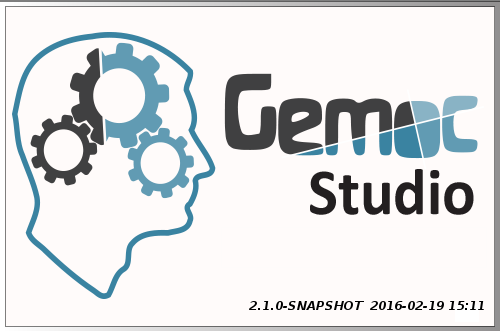
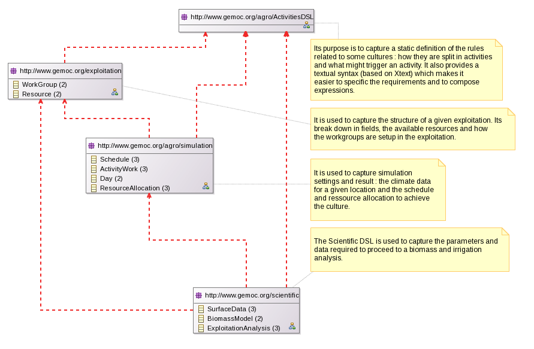
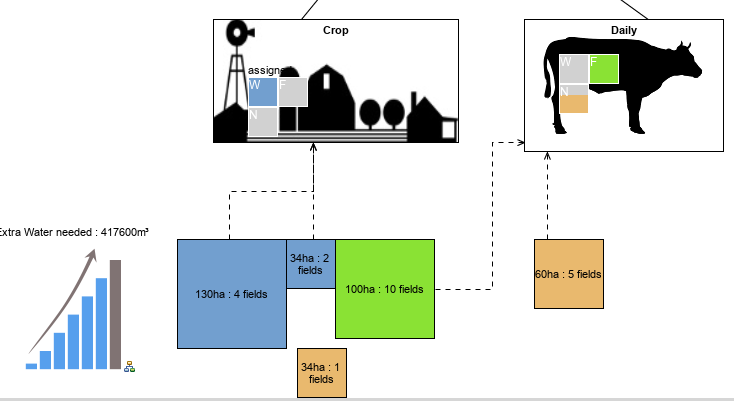
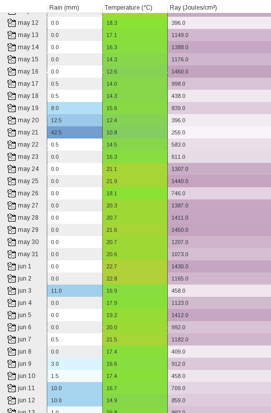
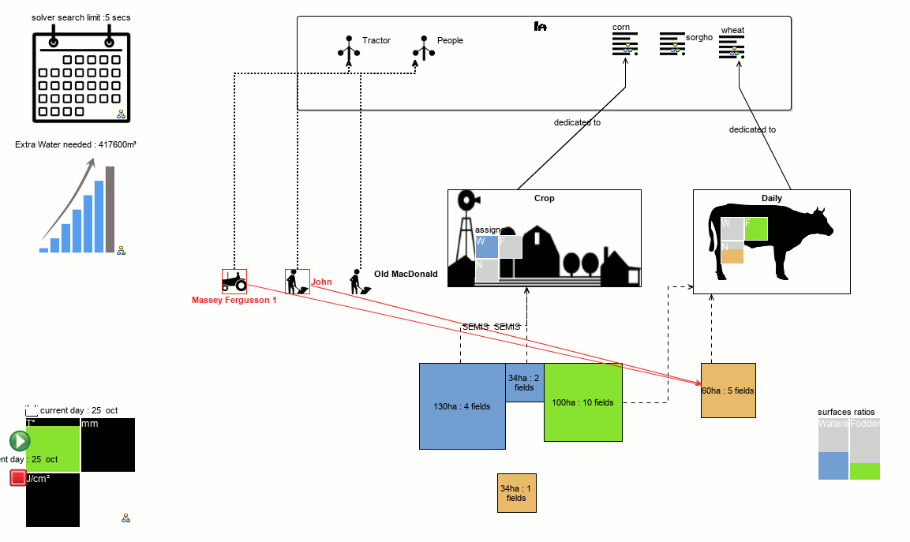
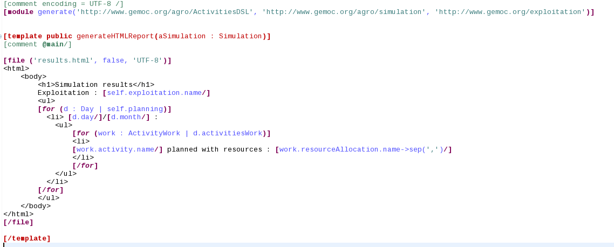
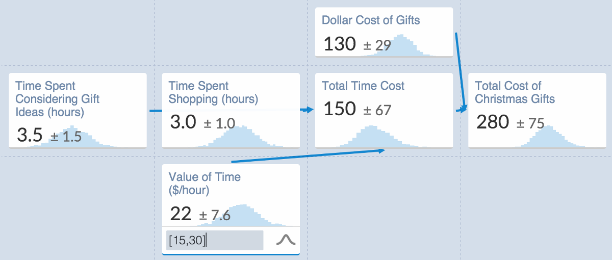

Modeling Avengers
OSS Technology Mix for Saving the World
Cédric Brun, OBEO (@bruncedric)
Benoit Combemale, INRIA and Univ. Rennes 1 (@bcombemale)
Slides available at http://cedric.brun.io/talks/ModelingAvengers/
GEMOC
- The GEMOC ANR project (http://gemoc.org/ins):
A Language Workbench for concurrent execution and simulation of heterogeneous models
- The GEMOC Initiative (http://gemoc.org/):
GEMOC is an open international initiative that aims to coordinate and disseminate the research results regarding the support of the coordinated use of various modeling languages that will lead to the concept of globalization of modeling languages, that is, the use of multiple modeling languages to support coordinated development of diverse aspects of a system.
French National Institute for Agricultural Research
Water resource management in agriculture
- Cultivator has to book for water one year in advance
- Administration has to make sure there is twice the quantity which has been booked for the whole region.
- Domain expert (INRA) wants to defines and assess new cultures activities
Multiple stakeholders, multiple concerns and scales
Cultivator
- Which field to use for growing what ?
- How would the crops grows?
- When would I have to add water ?
- Machines ? Peoples ?
Complex System, optimization with multiple factors (weather, costs, resourcess)
What We* do
build domain specific tools for supporting design and analysis of complex software or embedded systems from multiple viewpoints.
*: modeling communityHow our technologies and techniques would fare in such context?
Disclaimer: this experiment is not about the science itself but about how to use the OSS modeling technologies.
This is a toy, but a toy complex enough that we can learn from it.
Process
- State your resources (Machines, peoples, fields)
- Pick some climate model
- Assign surfaces to cultures
- Deduce a possible planning
- See how the biomass would grow
- See how much irrigation we would need
- do it again !
| Language Engineers | Domain | Viewpoint (Graph Editor) | Grammar (Textual Editor) | Constraints and Goals (Score function) | Behavioral Semantic (animator) |
| Language Users | Data | Views and static checking | Text | Optimization | Execution, simulation |
Demo time
EMF
Several Ecore models

👍 API
public static void main(String[] args) {
// ...
Exploitation exploitation = loadFromFile(args[1]);
for (WorkGroup group : exploitation.getGroups()) {
System.out.println(group.getName());
for (Culture cultureAssignedToThisGroup : group.getCultures()) {
for (ExploitationActivity activity : cultureAssignedToThisGroup
.getActivities()) {
System.out.println(activity.getName());
System.out.println(activity.getFrequency());
System.out.println(activity.getStartDate());
System.out.println(activity.getEndDate());
}
// ...
👍 Seamless data reuse
public class ClimateDataResourceImpl extends ResourceImpl {
public ClimateDataResourceImpl(URI uri) {
super(uri);
}
@Override
protected void doLoad(InputStream inputStream, Map options)
throws IOException {
getContents().clear();
ClimateData climate = SimulationFactory.eINSTANCE.createClimateData();
String content = CharStreams.toString(new InputStreamReader(inputStream,
Charsets.US_ASCII));
List lines = Lists.newArrayList(Splitter.on('\n')
.omitEmptyStrings().split(content));
// ...
Textual Syntax : Xtext
👍 predicates, expressions, conditions
Graphical Syntax: Sirius
👍 Dynamic Editing
👍 Table editors
👍 Animation*
 * with Sirius animatorBarely scratched the surface
- Eclipse ICE and Science WG
- Generating reports using Acceleo 
- Comparing alternatives using EMF Compare
- ...
Analysis

Planning problems
If you need to optimize goals under constraints while having limited resources.
When will I seed the crop based on the culture constraints, the climate and the peoples, machine, fields I have ?
NP class of problems, huge number of solutions, many being useless
👍 Easy to mix with EMF
@PlanningEntity(
difficultyComparatorClass = ActivityWorkDifficultyComparator.class
)
public interface ActivityWork extends EObject {
//...
@PlanningVariable(valueRangeProviderRefs = {"days"})
Day getScheduledOn();
//...
}
@PlanningEntity(
difficultyComparatorClass = ResourceAllocationDifficultyComparator.class
)
public interface ResourceAllocation extends EObject {
//...
@PlanningVariable(valueRangeProviderRefs = {"resources"})
Resource getResource();
//...
}
👍 Easy to mix with EMF
@PlanningEntity(
difficultyComparatorClass = ActivityWorkDifficultyComparator.class
)
public interface ActivityWork extends EObject {
//...
@PlanningVariable(valueRangeProviderRefs = {"days"})
Day getScheduledOn();
//...
}
@PlanningEntity(
difficultyComparatorClass = ResourceAllocationDifficultyComparator.class
)
public interface ResourceAllocation extends EObject {
//...
@PlanningVariable(valueRangeProviderRefs = {"resources"})
Resource getResource();
//...
}
👍 Easy to mix with EMF
@PlanningEntity(
difficultyComparatorClass = ActivityWorkDifficultyComparator.class
)
public interface ActivityWork extends EObject {
//...
@PlanningVariable(valueRangeProviderRefs = {"days"})
Day getScheduledOn();
//...
}
@PlanningEntity(
difficultyComparatorClass = ResourceAllocationDifficultyComparator.class
)
public interface ResourceAllocation extends EObject {
//...
@PlanningVariable(valueRangeProviderRefs = {"resources"})
Resource getResource();
//...
}
Score Function
public Score calculateScore(SimulationSolution solution) {
int hardScore = 0;
int softScore = 0;
//...
/*
* Constraint: all the resources which are required should be allocated.
*/
for (ResourceAllocation alloc : solution.getSimulation().getAllocations()) {
if (alloc.getResource() == null) {
hardScore += mediumPenalty(1);
addFeedback(
alloc.getWork(),
(createFeedback(FeedbackLevel.ERROR, "A required resource of kind "
+ alloc.getKind().getName() + " is missing.")));
}
}
//...
return HardSoftScore.valueOf(hardScore, softScore)
}
What have we learned so far?
“Do not compromise on your domain model.”
Effort to build this tooling ?
- 3 hours meeting + mail exchanges with INRA experts
- 10 days of Eclipse Modeling experts
- Proof of concept code is on github
Technologies meant to do this
Are relevant to save this
Teaming up technologies instead of stacking it
Eclipse: platform and User interface integration
EMF: data, resources, deeplinkink, reflective manipulation
Opportunities
- Time modeling and management
- Probabilistic models 
- Graph/Charts representation in Sirius
- Alternatives comparisons
- ...
Further Materials
- [slides] Modeling for Smart CPS (Benoit Combemale and Jean-Michel Bruel), CPS Seminar, 2016
- [slides] Modeling for Sustainability (Benoit Combemale), INRA Seminar, 2015
- [paper] MDE in Practice for Computational Science (Jean-Michel Bruel, Benoit Combemale, Ileana Ober, Hélène Raynal), In International Conference on Computational Science (ICCS), 2015.
- [video, french] L'IDM par la pratique dans le contexte des modèles agronomiques autour d'une étude de cas (Benoit Combemale, DEVLOG-IDM2014, Oct. 2014)
- [video, french] Composition and concurrent execution of heterogeneous domain-specific models (Benoit Combemale, DEVLOG-IDM2013, Oct. 2013)